2022 National 5 Computing Science marking instructions
Source: Scottish Qualifications Authority (SQA) / Qualifications Scotland. This is a StemInteract HTML companion, not an official HTML edition. Selectable text is supplied alongside original page images. Use the images or original PDF for equations, powers, fractions, vector notation, tables and diagrams; text extraction cannot fully preserve mathematical layout.
Jump to a question
PDF page 1
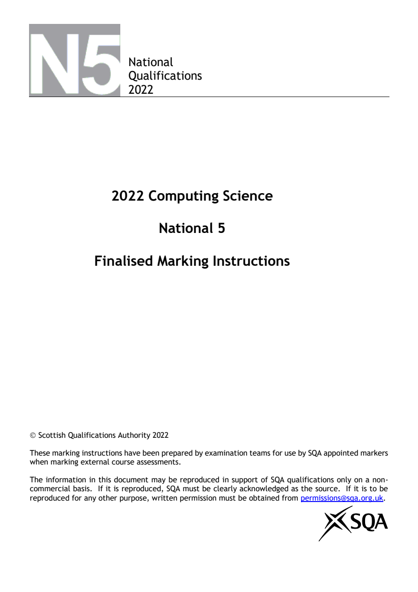
Selectable page text
National
Qualifications
2022
2022 Computing Science
National 5
Finalised Marking Instructions
© Scottish Qualifications Authority 2022
These marking instructions have been prepared by examination teams for use by SQA appointed markers
when marking external course assessments.
The information in this document may be reproduced in support of SQA qualifications only on a non-
commercial basis. If it is reproduced, SQA must be clearly acknowledged as the source. If it is to be
reproduced for any other purpose, written permission must be obtained from permissions@sqa.org.uk.PDF page 2
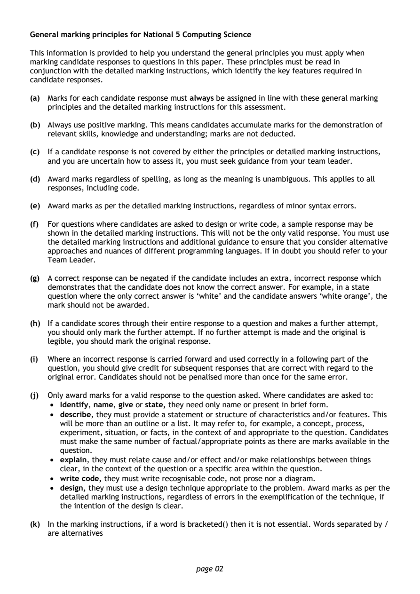
Selectable page text
General marking principles for National 5 Computing Science
This information is provided to help you understand the general principles you must apply when
marking candidate responses to questions in this paper. These principles must be read in
conjunction with the detailed marking instructions, which identify the key features required in
candidate responses.
(a) Marks for each candidate response must always be assigned in line with these general marking
principles and the detailed marking instructions for this assessment.
(b) Always use positive marking. This means candidates accumulate marks for the demonstration of
relevant skills, knowledge and understanding; marks are not deducted.
(c) If a candidate response is not covered by either the principles or detailed marking instructions,
and you are uncertain how to assess it, you must seek guidance from your team leader.
(d) Award marks regardless of spelling, as long as the meaning is unambiguous. This applies to all
responses, including code.
(e) Award marks as per the detailed marking instructions, regardless of minor syntax errors.
(f) For questions where candidates are asked to design or write code, a sample response may be
shown in the detailed marking instructions. This will not be the only valid response. You must use
the detailed marking instructions and additional guidance to ensure that you consider alternative
approaches and nuances of different programming languages. If in doubt you should refer to your
Team Leader.
(g) A correct response can be negated if the candidate includes an extra, incorrect response which
demonstrates that the candidate does not know the correct answer. For example, in a state
question where the only correct answer is ‘white’ and the candidate answers ‘white orange’, the
mark should not be awarded.
(h) If a candidate scores through their entire response to a question and makes a further attempt,
you should only mark the further attempt. If no further attempt is made and the original is
legible, you should mark the original response.
(i) Where an incorrect response is carried forward and used correctly in a following part of the
question, you should give credit for subsequent responses that are correct with regard to the
original error. Candidates should not be penalised more than once for the same error.
(j) Only award marks for a valid response to the question asked. Where candidates are asked to:
• Identify, name, give or state, they need only name or present in brief form.
• describe, they must provide a statement or structure of characteristics and/or features. This
will be more than an outline or a list. It may refer to, for example, a concept, process,
experiment, situation, or facts, in the context of and appropriate to the question. Candidates
must make the same number of factual/appropriate points as there are marks available in the
question.
• explain, they must relate cause and/or effect and/or make relationships between things
clear, in the context of the question or a specific area within the question.
• write code, they must write recognisable code, not prose nor a diagram.
• design, they must use a design technique appropriate to the problem. Award marks as per the
detailed marking instructions, regardless of errors in the exemplification of the technique, if
the intention of the design is clear.
(k) In the marking instructions, if a word is bracketed() then it is not essential. Words separated by /
are alternatives
page 02PDF page 3
Question 1Question 2Question 3Question 4Question 5Question 6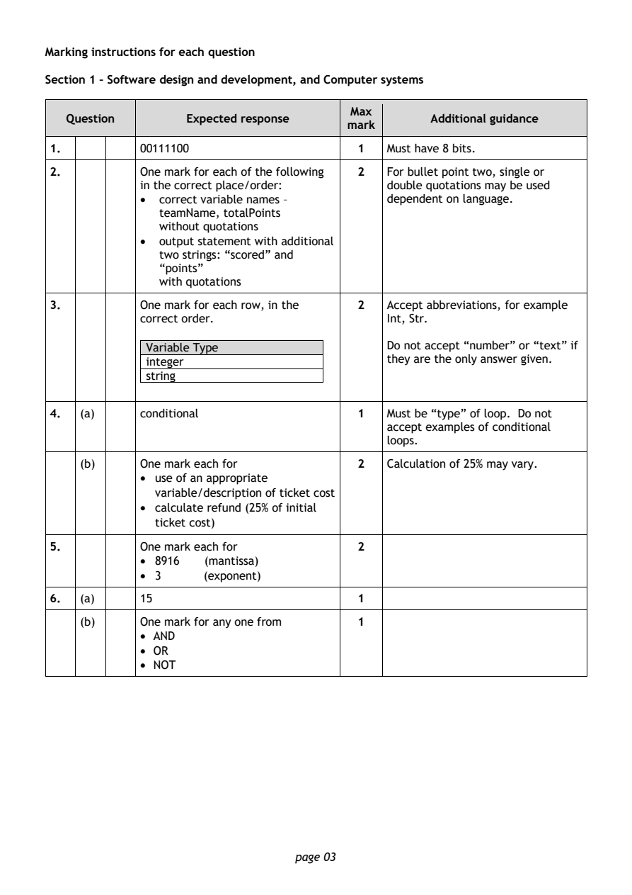
Selectable page text
Marking instructions for each question
Section 1 – Software design and development, and Computer systems
Max
Question Expected response Additional guidance
mark
1. 00111100 1 Must have 8 bits.
2. One mark for each of the following 2 For bullet point two, single or
in the correct place/order: double quotations may be used
• correct variable names – dependent on language.
teamName, totalPoints
without quotations
• output statement with additional
two strings: “scored” and
“points”
with quotations
3. One mark for each row, in the 2 Accept abbreviations, for example
correct order. Int, Str.
Variable Type Do not accept “number” or “text” if
integer they are the only answer given.
string
4. (a) conditional 1 Must be “type” of loop. Do not
accept examples of conditional
loops.
(b) One mark each for 2 Calculation of 25% may vary.
• use of an appropriate
variable/description of ticket cost
• calculate refund (25% of initial
ticket cost)
5. One mark each for 2
• 8916 (mantissa)
• 3 (exponent)
6. (a) 15 1
(b) One mark for any one from 1
• AND
• OR
• NOT
page 03PDF page 4
Question 7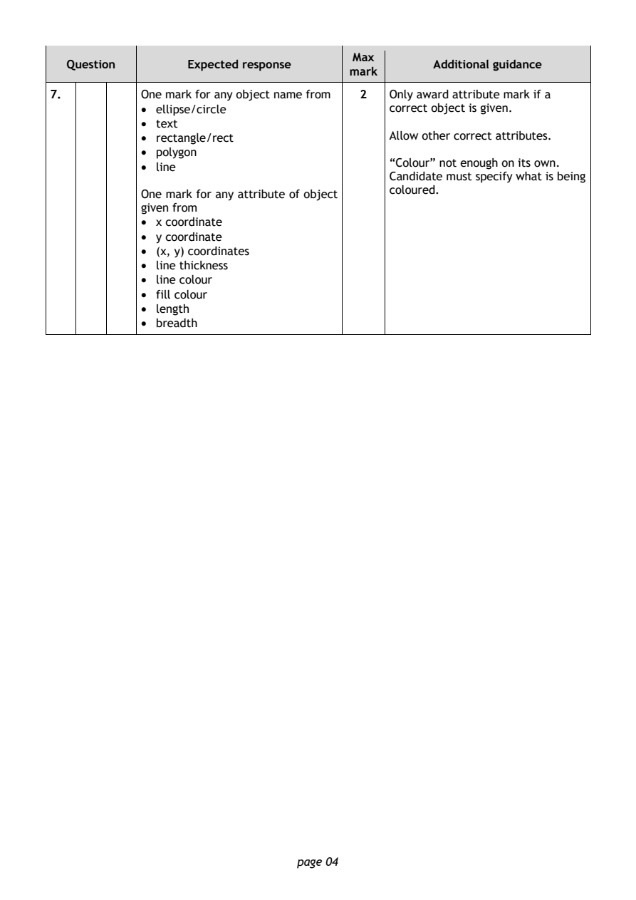
Selectable page text
Max
Question Expected response Additional guidance
mark
7. One mark for any object name from 2 Only award attribute mark if a
• ellipse/circle correct object is given.
• text
• rectangle/rect Allow other correct attributes.
• polygon
“Colour” not enough on its own.
• line
Candidate must specify what is being
coloured.
One mark for any attribute of object
given from
• x coordinate
• y coordinate
• (x, y) coordinates
• line thickness
• line colour
• fill colour
• length
• breadth
page 04PDF page 5
Question 8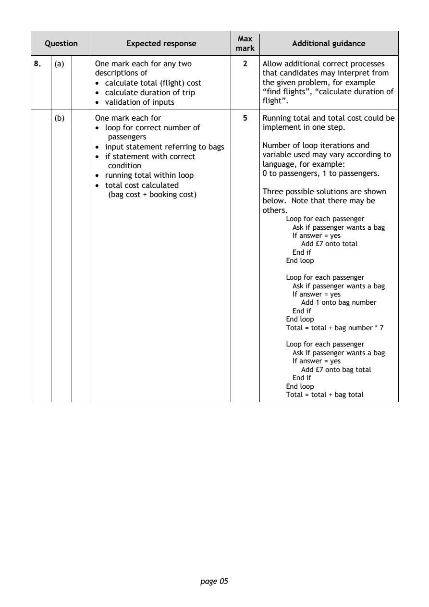
Selectable page text
Max
Question Expected response Additional guidance
mark
8. (a) One mark each for any two 2 Allow additional correct processes
descriptions of that candidates may interpret from
• calculate total (flight) cost the given problem, for example
• calculate duration of trip “find flights”, “calculate duration of
• validation of inputs flight”.
(b) One mark each for 5 Running total and total cost could be
• loop for correct number of implement in one step.
passengers
• input statement referring to bags Number of loop iterations and
• if statement with correct variable used may vary according to
condition language, for example:
• running total within loop 0 to passengers, 1 to passengers.
• total cost calculated
Three possible solutions are shown
(bag cost + booking cost)
below. Note that there may be
others.
Loop for each passenger
Ask if passenger wants a bag
If answer = yes
Add £7 onto total
End if
End loop
Loop for each passenger
Ask if passenger wants a bag
If answer = yes
Add 1 onto bag number
End if
End loop
Total = total + bag number * 7
Loop for each passenger
Ask if passenger wants a bag
If answer = yes
Add £7 onto bag total
End if
End loop
Total = total + bag total
page 05PDF page 6
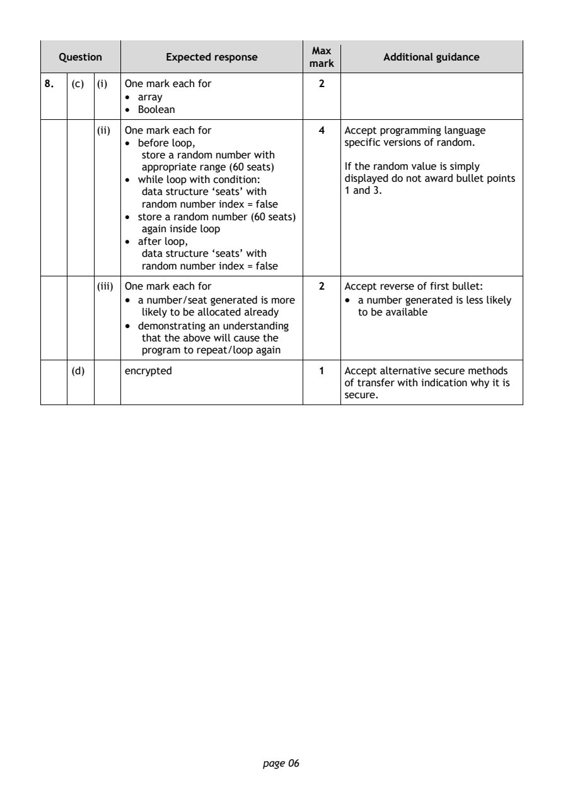
Selectable page text
Max
Question Expected response Additional guidance
mark
8. (c) (i) One mark each for 2
• array
• Boolean
(ii) One mark each for 4 Accept programming language
• before loop, specific versions of random.
store a random number with
appropriate range (60 seats) If the random value is simply
• while loop with condition: displayed do not award bullet points
data structure ‘seats’ with 1 and 3.
random number index = false
• store a random number (60 seats)
again inside loop
• after loop,
data structure ‘seats’ with
random number index = false
(iii) One mark each for 2 Accept reverse of first bullet:
• a number/seat generated is more • a number generated is less likely
likely to be allocated already to be available
• demonstrating an understanding
that the above will cause the
program to repeat/loop again
(d) encrypted 1 Accept alternative secure methods
of transfer with indication why it is
secure.
page 06PDF page 7
Question 9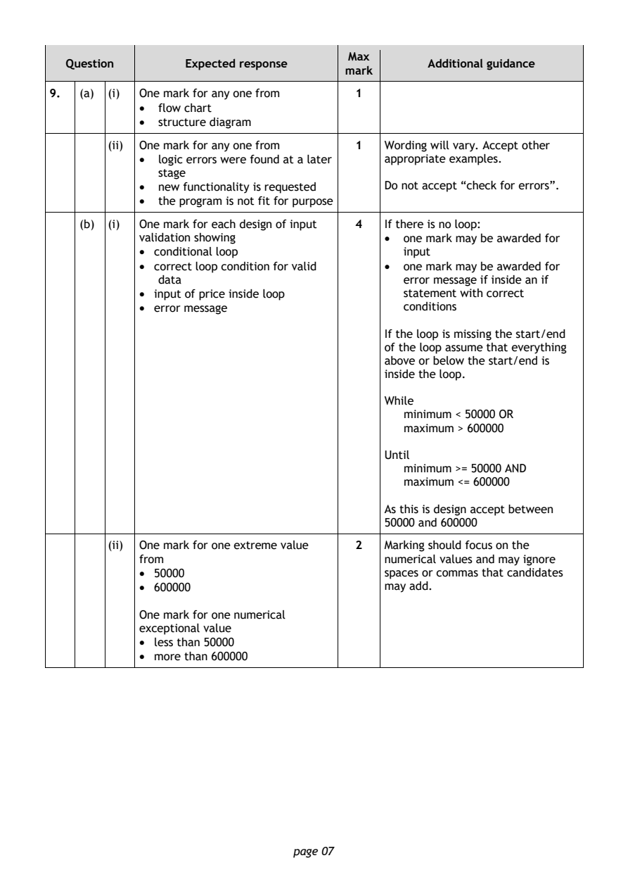
Selectable page text
Max
Question Expected response Additional guidance
mark
9. (a) (i) One mark for any one from 1
• flow chart
• structure diagram
(ii) One mark for any one from 1 Wording will vary. Accept other
• logic errors were found at a later appropriate examples.
stage
• new functionality is requested Do not accept “check for errors”.
• the program is not fit for purpose
(b) (i) One mark for each design of input 4 If there is no loop:
validation showing • one mark may be awarded for
• conditional loop input
• correct loop condition for valid • one mark may be awarded for
data error message if inside an if
• input of price inside loop statement with correct
• error message conditions
If the loop is missing the start/end
of the loop assume that everything
above or below the start/end is
inside the loop.
While
minimum < 50000 OR
maximum > 600000
Until
minimum >= 50000 AND
maximum <= 600000
As this is design accept between
50000 and 600000
(ii) One mark for one extreme value 2 Marking should focus on the
from numerical values and may ignore
• 50000 spaces or commas that candidates
• 600000 may add.
One mark for one numerical
exceptional value
• less than 50000
• more than 600000
page 07PDF page 8
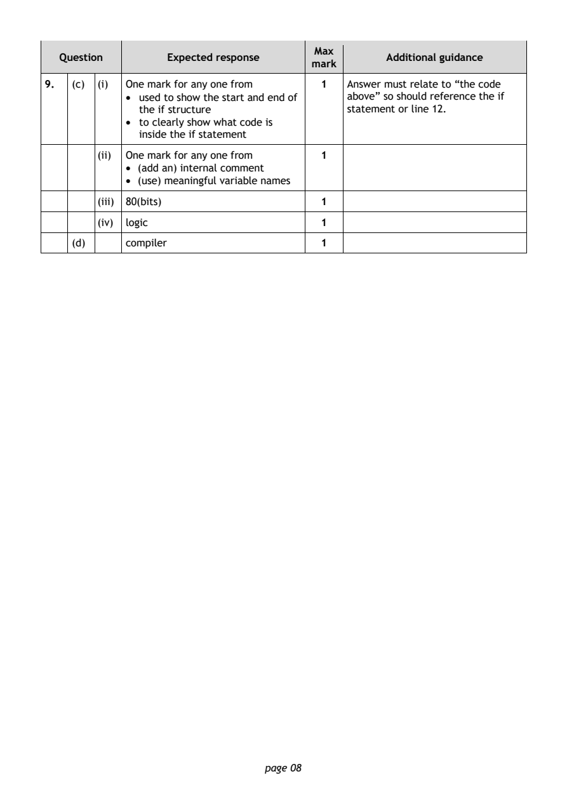
Selectable page text
Max
Question Expected response Additional guidance
mark
9. (c) (i) One mark for any one from 1 Answer must relate to “the code
• used to show the start and end of above” so should reference the if
the if structure statement or line 12.
• to clearly show what code is
inside the if statement
(ii) One mark for any one from 1
• (add an) internal comment
• (use) meaningful variable names
(iii) 80(bits) 1
(iv) logic 1
(d) compiler 1
page 08PDF page 9
Question 10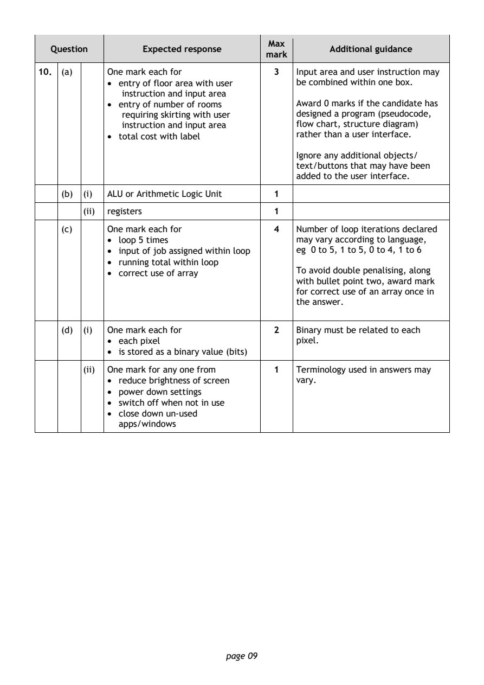
Selectable page text
Max
Question Expected response Additional guidance
mark
10. (a) One mark each for 3 Input area and user instruction may
• entry of floor area with user be combined within one box.
instruction and input area
• entry of number of rooms Award 0 marks if the candidate has
requiring skirting with user designed a program (pseudocode,
instruction and input area flow chart, structure diagram)
• total cost with label rather than a user interface.
Ignore any additional objects/
text/buttons that may have been
added to the user interface.
(b) (i) ALU or Arithmetic Logic Unit 1
(ii) registers 1
(c) One mark each for 4 Number of loop iterations declared
• loop 5 times may vary according to language,
• input of job assigned within loop eg 0 to 5, 1 to 5, 0 to 4, 1 to 6
• running total within loop
• correct use of array To avoid double penalising, along
with bullet point two, award mark
for correct use of an array once in
the answer.
(d) (i) One mark each for 2 Binary must be related to each
• each pixel pixel.
• is stored as a binary value (bits)
(ii) One mark for any one from 1 Terminology used in answers may
• reduce brightness of screen vary.
• power down settings
• switch off when not in use
• close down un-used
apps/windows
page 09PDF page 10
Question 11Question 12Question 13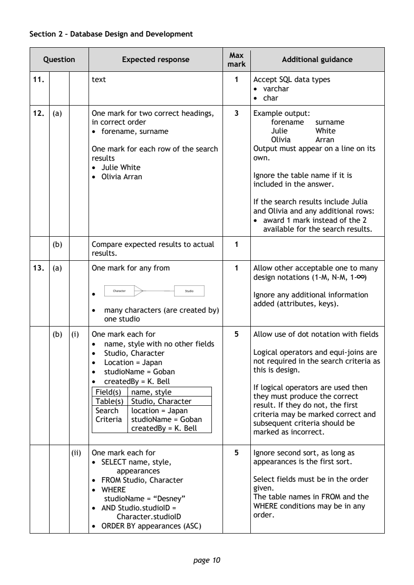
Selectable page text
Section 2 – Database Design and Development
Max
Question Expected response Additional guidance
mark
11. text 1 Accept SQL data types
• varchar
• char
12. (a) One mark for two correct headings, 3 Example output:
in correct order forename surname
• forename, surname Julie White
Olivia Arran
One mark for each row of the search Output must appear on a line on its
results own.
• Julie White
• Olivia Arran Ignore the table name if it is
included in the answer.
If the search results include Julia
and Olivia and any additional rows:
• award 1 mark instead of the 2
available for the search results.
(b) Compare expected results to actual 1
results.
13. (a) One mark for any from 1 Allow other acceptable one to many
∞
design notations (1-M, N-M, 1- )
• Ignore any additional information
added (attributes, keys).
• many characters (are created by)
one studio
(b) (i) One mark each for 5 Allow use of dot notation with fields
• name, style with no other fields
• Studio, Character Logical operators and equi-joins are
• Location = Japan not required in the search criteria as
• studioName = Goban this is design.
• createdBy = K. Bell
If logical operators are used then
Field(s) name, style
they must produce the correct
Table(s) Studio, Character
result. If they do not, the first
Search location = Japan
criteria may be marked correct and
Criteria studioName = Goban
subsequent criteria should be
createdBy = K. Bell
marked as incorrect.
(ii) One mark each for 5 Ignore second sort, as long as
• SELECT name, style, appearances is the first sort.
appearances
• FROM Studio, Character Select fields must be in the order
• WHERE given.
studioName = “Desney” The table names in FROM and the
• AND Studio.studioID = WHERE conditions may be in any
Character.studioID order.
• ORDER BY appearances (ASC)
page 10PDF page 11
Question 14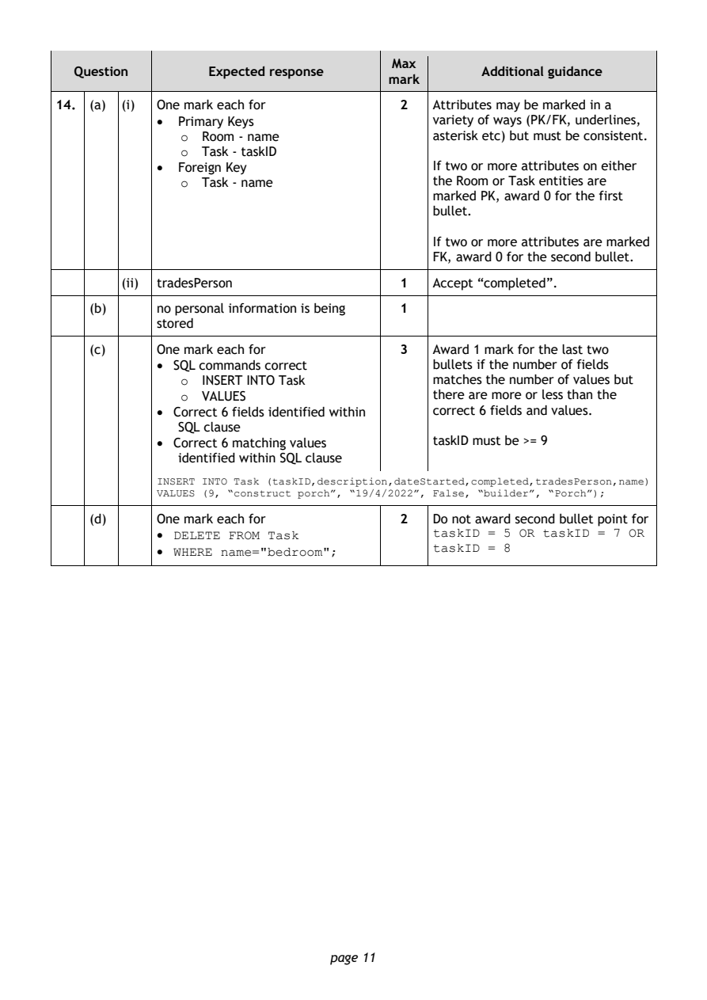
Selectable page text
Max
Question Expected response Additional guidance
mark
14. (a) (i) One mark each for 2 Attributes may be marked in a
• Primary Keys variety of ways (PK/FK, underlines,
o Room - name asterisk etc) but must be consistent.
o Task - taskID
• Foreign Key If two or more attributes on either
o Task - name the Room or Task entities are
marked PK, award 0 for the first
bullet.
If two or more attributes are marked
FK, award 0 for the second bullet.
(ii) tradesPerson 1 Accept “completed”.
(b) no personal information is being 1
stored
(c) One mark each for 3 Award 1 mark for the last two
• SQL commands correct bullets if the number of fields
o INSERT INTO Task matches the number of values but
o VALUES there are more or less than the
• Correct 6 fields identified within correct 6 fields and values.
SQL clause
• Correct 6 matching values t askID must be >= 9
identified within SQL clause
INSERT INTO Task (taskID,description,dateStarted,completed,tradesPerson,name)
VALUES (9, “construct porch”, “19/4/2022”, False, “builder”, “Porch”);
(d) One mark each for 2 Do not award second bullet point for
• DELETE FROM Task taskID = 5 OR taskID = 7 OR
taskID = 8
• WHERE name="bedroom";
page 11PDF page 12
Question 15Question 16Question 17Question 18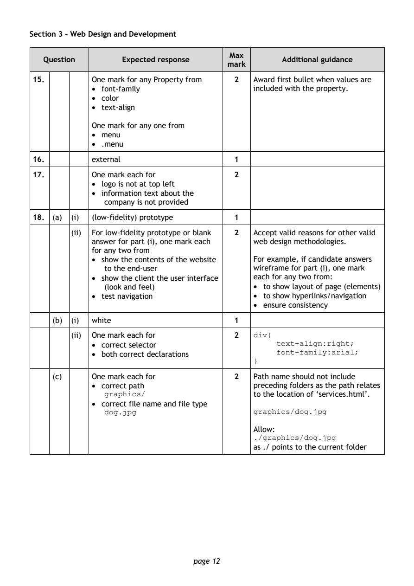
Selectable page text
Section 3 – Web Design and Development
Max
Question Expected response Additional guidance
mark
15. One mark for any Property from 2 Award first bullet when values are
• font-family included with the property.
• color
• text-align
One mark for any one from
• menu
• .menu
16. external 1
17. One mark each for 2
• logo is not at top left
• information text about the
company is not provided
18. (a) (i) (low-fidelity) prototype 1
(ii) For low-fidelity prototype or blank 2 Accept valid reasons for other valid
answer for part (i), one mark each web design methodologies.
for any two from
• show the contents of the website For example, if candidate answers
to the end-user wireframe for part (i), one mark
• show the client the user interface each for any two from:
(look and feel) • to show layout of page (elements)
• test navigation • to show hyperlinks/navigation
• ensure consistency
(b) (i) white 1
(ii) One mark each for 2 div{
• correct selector text-align:right;
font-family:arial;
• both correct declarations
}
(c) One mark each for 2 Path name should not include
• correct path preceding folders as the path relates
graphics/ to the location of ‘services.html’.
• correct file name and file type
dog.jpg graphics/dog.jpg
Allow:
./graphics/dog.jpg
as ./ points to the current folder
page 12PDF page 13
Question 19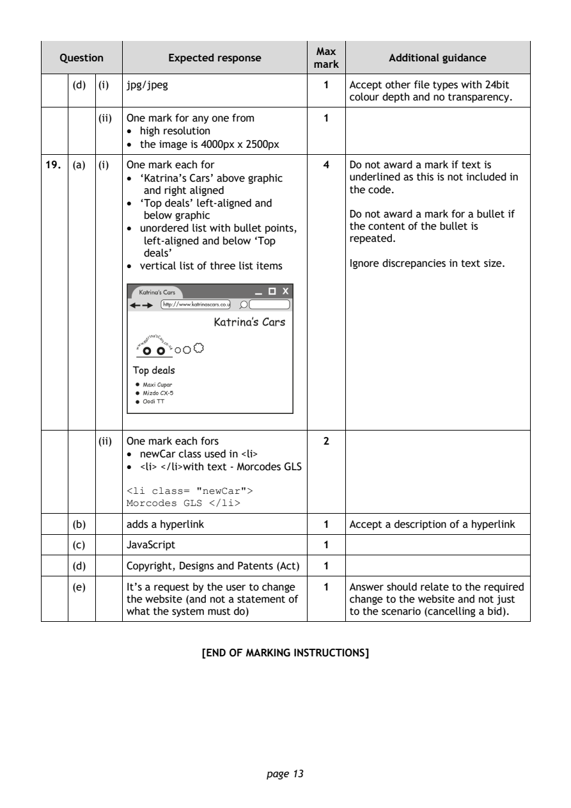
Selectable page text
Max
Question Expected response Additional guidance
mark
(d) (i) jpg/jpeg 1 Accept other file types with 24bit
colour depth and no transparency.
(ii) One mark for any one from 1
• high resolution
• the image is 4000px x 2500px
19. (a) (i) One mark each for 4 Do not award a mark if text is
• ‘Katrina’s Cars’ above graphic underlined as this is not included in
and right aligned the code.
• ‘Top deals’ left-aligned and
below graphic Do not award a mark for a bullet if
• unordered list with bullet points, the content of the bullet is
left-aligned and below ‘Top repeated.
deals’
• vertical list of three list items Ignore discrepancies in text size.
Top deals
(ii) One mark each fors 2
• newCar class used in <li>
• <li> </li>with text - Morcodes GLS
<li class= "newCar">
Morcodes GLS </li>
(b) adds a hyperlink 1 Accept a description of a hyperlink
(c) JavaScript 1
(d) Copyright, Designs and Patents (Act) 1
(e) It’s a request by the user to change 1 Answer should relate to the required
the website (and not a statement of change to the website and not just
what the system must do) to the scenario (cancelling a bid).
[END OF MARKING INSTRUCTIONS]
page 13